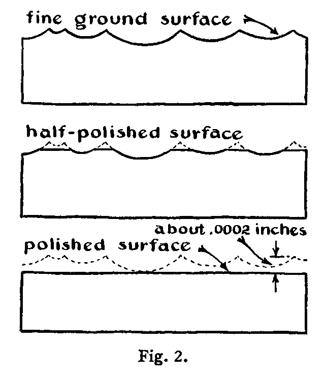

In this chapter we will describe the technique of making the optical surfaces required for mirrors, prisms, interferometers, lenses, and so forth. The optical surfaces on these instruments are characterized by being much more accurate than ordinary machined and ground surfaces. In fact, optical tests sensitive to a few millionths of an inch are necessary to show their lack of true perfection. Since our concern here is with high-precision work, in which errors are usually less than a wave length of light, we do not include methods used for plate glass, cheap lenses, and other commercial work in which the tolerance is greater.
The technique described here is intended primarily to guide the research worker who finds it desirable or necessary to prepare his own optical surfaces.
In any case the task set before the worker is that of generating an extremely accurate polished surface. Accordingly, we will first set down the general technique involved without detailed reference to what is being made. Later we will treat of special procedures.
The glass or other material on which the optical surface is to be prepared is first roughly formed to the desired shape. For example, in the case of a lens, the first step will consist of cutting out a disk of glass. A prism will be first sawed or ground to rough dimensions from a larger block. The proposed surface itself is then generated more precisely by periods of grinding with suitable laps. The surface is ground first with coarse grits of Carborundum to conform approximately to the specifications. Then finer and finer abrasives are used until at last the grinding is terminated with the finest emery flour. The grinding is periodically interrupted for testing with a straightedge, template, micrometer, or spherometer. After fine grinding, the surface is polished with a pitch lap and rouge. Finally it is brought as near to perfection as the specifications require by "figuring," that is, by local retouching with polishing tools. The figuring is guided by delicate optical tests.
Optical grinding and polishing are alike in that both require the use of a material which is harder than the glass. This material is used in the form of loose grits or fine powder. The two operations are unlike in that the grits and powder used for grinding are worked over the surface with a hard tool, ordinarily made either of glass or cast iron, whereas polishing tools are made from a soft base material. A polishing tool for preparing precise optical surfaces is usually composed of some combination of pitch and wax as the soft base material. Paper cloth and wood are often used for polishing tools in cases in which no great precision is demanded.
The grinding process depends upon the characteristic conchoidal fracture produced when an excessively high pressure is applied to a point in the surface of the glass. The pressure exerted on the surface by a single particle of abrasive or grit, as it is rolled about between the tool and the work, builds up stress beyond the strength of the glass, resulting in the removal of a chip. This is illustrated by Fig. 1. Carborundum and emery grits are ordinarily used. The efficiency of the process depends primarily on the sharpness of the grits. Carborundum grits break down faster than emery, although they are harder than emery. Fractured Carborundum grits have sharp edges and consequently they grind fast. Ellison[1] says that Carborundum grinds about six times as fast as emery. Carborundum is used for the first coarser grades of grits, and emery for the last finer grades. Natural emery (corundum) cuts about twice as fast as synthetic emery. The corundum produces a smoother surface than either Carborundum or synthetic emery and is, accordingly, best for the final grinding. The hardness of various abrasives is indicated in Moh's extended hardness scale. (See Table I.)
From a practical point of view, we may consider that the polishing operation is a planing process.[2] The grains of abrasive appear to fix themselves automatically in the soft material of the tool, usually pitch, so that their crystal surfaces are parallel to the direction of motion of the tool and parallel to the plane of its surface. Thus a complex scraper is formed. As this moves over the glass, the height of each abrasive particle is automatically adjusted in the soft backing so that it produces a fine smooth cut. The removed glass is washed away by the liquid lubricant, usually water. The planing action starts on the peaks of the "hills" that result from the fine grinding and produces a full polish there at the first stroke. Continued operation of the polishing tool removes additional glass, so that the hills become plateaus and are finally planed down to the level of the deepest valleys. The character of the surface on any particular plateau is not improved by continued polishing - it is to be regarded as fully polished from the first stroke. This is illustrated in Fig. 2. After the whole surface becomes uniformly polished, further working with the polishing tool removes additional glass. In constructing an experimental aspheric camera lens, as much as thirty thousandths of an inch of glass has been removed by polishing.
Glass can be successfully polished with almost any fine abrasive, provided a suitable soft and yielding backing is used. For some types of work - for example, for edging mirrors where irregularities in the surface do not matter - glass is polished with a wood tool charged with Carborundum or emery. Glass may be polished with rouge, either the red oxide or the magnetic black oxide, and also with charcoal or oxide of tin. However, for ordinary optical work rouge is the most satisfactory polishing material. Surfaces of glass, quartz, speculum metal, calcite, and fluorite are best polished with rouge on a wax or pitch tool. The action of various polishing agents depends on the type of backing, whether cloth, paper, or pitch is used, on the hardness of the material being polished, and on the method of lubrication. Some agents which are indifferent polishers when used with a wax or pitch tool and lubricated with water are quite effective when used dry on a paper lap. For paper polishing, oxide of tin (putty powder) is commonly used. Chromium oxide (Cr 2 3 ) is recommended for polishing certain metals such as stainless steel which are "attacked" by rouge.
The material for the polishing tool may be a soft metal - copper, lead, or aluminum. Tools made of these metals are sometimes used for polishing thin specimens of minerals which are to be examined with the microscope. Levigated alumina is usually employed as abrasive for work of this type.
The polishing tools used in precision optical work are made of pitch or pitch and wax compounds, in contrast with cloth or paper-faced tools used on some commercial products. Glass is polished with surprising rapidity on a cloth polisher, but it exhibits a peculiar grainy "lemon-peel" surface. This method of polishing is generally used in the manufacture of plate glass. Paper polishers in general produce a somewhat better surface than cloth but are seldom used except for the manufacture of inexpensive lenses, such as for cheap hand magnifiers and so forth. All polishing tools of a fibrous nature produce a "lemon-peel" surface.
The technique which will form the nucleus of our first treatment is particularly suited to the making of surfaces of 3 to 6 inches in diameter or larger worked in glass or quartz. The procedures involved are fundamental and apply equally to mirrors, lenses, or prisms. The method treated here is used by D. O. Hendrix, a practicing optician associated with Mount Wilson Observatory.[3] This procedure is different in some respects from that described in the classic book on amateur telescope making by Ingalls, Porter, and Ellison.[4] For example, in their book they recommend using the tool underneath the work, while here we treat primarily of the method using the tool on top of the work.
[1] Ingalls, Albert G., editor, Amateur Telescope Making, page 74. New York: Scientific American Publishing Company, 1935.
[2]For a more comprehensive treatment of the theory of polishing from a different point of view, see the following:
Lord Rayleigh, Proc. Opt. Convention, No. 1, page 73 (1905); and Scientific Papers, Vol. IV, page 542. Cambridge: The University Press, 1903.
French, J. W., "The Working of Optical Parts," Dictionary of Applied Science, Vol. IV, page 326. London: The Macmillan Company, 1923.
Finch, G. I., "The Beilby Layer," Science Progress, SI, 609 (1937).
[3]I am indebted to Mr. D. O. Hendrix for the procedures presented here.
[4]Ingalls, Albert G., editor, Amateur Telescope Making, Advanced. New York: Scientific American Publishing Company, 1937.
[5]Diamond glass cutters may be obtained from the Standard Diamond Tool Corporation, 64 West 48th Street, New York City. This company also sharpens diamond glass cutters.
[6]Topler, A., Pogg. Ann., 131, 33, 180 (1867). Wood, R. W., Physical Optics, page 93. New York: The Macmillan Company, 1934.
[7]Several layers of the thin metal sheet are laid together on an anvil, and a sharp needle is driven halfway through them. They are then separated and the one with a suitable hole is selected. Each pierced sheet has a small hole of a different size and all the holes are round.
[8]See Amateur Telescope Making, Advanced, article on Foucault's shadows by E. Gaviola, page 76.
[9]Gaviola, E., J.O.S.A., 26, 163 (1936).
[10]Anderson, J. A., and Porter, R. W., Astrophys. J., 70, 175 (1929).
[11]For further treatment of optical testing, see articles contained in Amateur Telescope Making, Advanced, and references cited therein.
[12]Brashear, John A., Proc. of Am. Assn. for Adv. of Science, 38, 166 (1885).
[13]Stromgren, B., "Das Schmidtsche Spiegelteleskop," Vierteljahrschrift der Astronomischen Gesellschaft, 70, 65 (1935). Smiley, C. H., "The Schmidt Camera," Popular Astronomy, 44, 415 (1936).